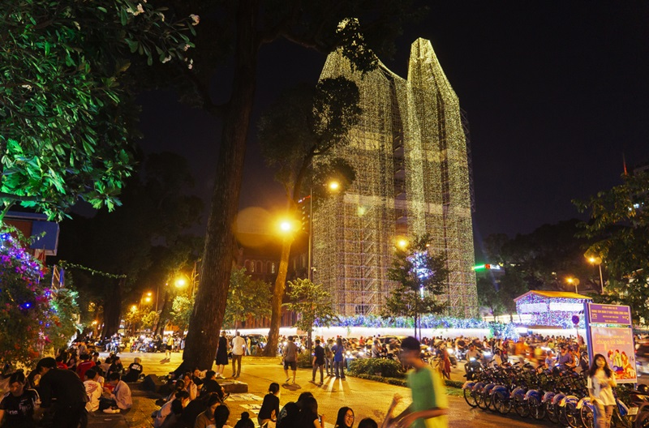

Nhà Thờ Đức Bà
Cafe bệt ở công viên đối diện Nhà Thờ Đức Bà là địa điểm tụ tập yêu thích của giới trẻ Sài Thành. Vào mỗi buổi tối, khi ánh đèn đường bắt đầu được thắp sáng, những quán nước vỉa hè bắt đầu mở cửa đón khách.
Mặc dù chỉ có cafe, trà chanh, trà quất, các loại nước đơn giản kèm theo đĩa hướng dương nữa thôi là các bạn đã có đủ combo để có thể ngồi “chém gió” với hội bạn trước khu vực Nhà Thờ Đức Bà rồi. Địa điểm vui chơi ở Sài Gòn vào buổi tối này ngay tại trung tâm Quận 1, giá cả đồ uống hợp lý, không gian xanh mát mẻ xứng đáng là điểm đến lý tưởng cho buổi tối cuối tuần.